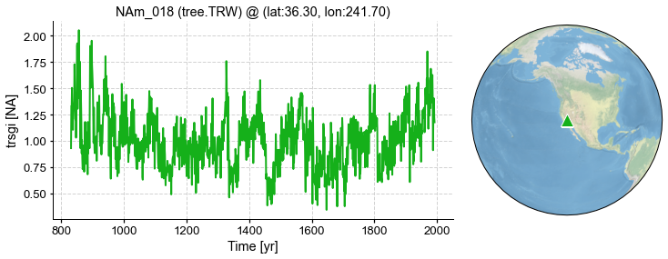

Bivariate linear regression#
In this tutorial, we introduce the bivariate linear regression based PSM in cfr.
[1]:
%load_ext autoreload
%autoreload 2
import cfr
print(cfr.__version__)
import pandas as pd
import numpy as np
Data preparation#
Proxy#
[3]:
pdb = cfr.ProxyDatabase().fetch('PAGES2kv2')
[4]:
pobj = pdb.records['NAm_018']
fig, ax = pobj.plot()

Model#
[5]:
model_tas = cfr.ClimateField().fetch('iCESM_past1000historical/tas')
model_pr = cfr.ClimateField().fetch('iCESM_past1000historical/pr')
>>> The target file seems existed at: ./data/tas_sfc_Amon_iCESM_past1000historical_085001-200512.nc . Loading from it instead of downloading ...
>>> The target file seems existed at: ./data/pr_sfc_Amon_iCESM_past1000historical_085001-200512.nc . Loading from it instead of downloading ...
Instrumental observations#
[6]:
obs_tas = cfr.ClimateField().fetch('CRUTSv4.07/tas', vn='tmp')
obs_pr = cfr.ClimateField().fetch('CRUTSv4.07/pr', vn='pre')
>>> The target file seems existed at: ./data/cru_ts4.07.1901.2022.tmp.dat.nc.gz . Loading from it instead of downloading ...
>>> The target file seems existed at: ./data/cru_ts4.07.1901.2022.pre.dat.nc.gz . Loading from it instead of downloading ...
[7]:
obs_pr = obs_pr.rename('pr')
obs_tas = obs_tas.rename('tas')
[8]:
fig, ax = obs_tas.plot(levels=np.linspace(-40, 40, 11))

Get climate data for a specific ProxyRecord#
[15]:
%%time
pobj.del_clim()
pobj.get_clim(model_tas, tag='model')
pobj.get_clim(model_pr, tag='model')
pobj.get_clim(obs_tas, tag='obs')
pobj.get_clim(obs_pr, tag='obs')
CPU times: user 8.94 ms, sys: 195 ms, total: 204 ms
Wall time: 2.31 s
[17]:
pobj.clim['obs.tas'].da
[17]:
<xarray.DataArray 'tas' (time: 1464)>
array([ 0.8 , 0.90000004, 2.2 , ..., 11.1 ,
1.7 , 0.3 ], dtype=float32)
Coordinates:
lon float32 241.8
lat float32 36.25
* time (time) object 1901-01-16 00:00:00 ... 2022-12-16 00:00:00
Attributes:
long_name: near-surface temperature
units: degrees Celsius
correlation_decay_distance: 1200.0Create a PSM object#
[18]:
lr_mdl = cfr.psm.Bilinear(pobj)
[19]:
%%time
sn_list = [
[1,2,3,4,5,6,7,8,9,10,11,12],
[6,7,8],
[3,4,5,6,7,8],
[6,7,8,9,10,11],
[-12,1,2],
[-9,-10,-11,-12,1,2],
[-12,1,2,3,4,5]
]
lr_mdl.calibrate(season_list1=sn_list, season_list2=sn_list)
CPU times: user 892 ms, sys: 210 ms, total: 1.1 s
Wall time: 1.1 s
[20]:
lr_mdl.calib_details
[20]:
{'df': proxy tas pr
time
1901.0 1.518 0.850000 117.650002
1902.0 1.321 4.700000 33.600002
1903.0 1.271 3.583333 40.266666
1904.0 1.257 4.883334 41.416668
1905.0 1.328 5.500000 45.683338
... ... ... ...
1988.0 1.212 5.016666 73.533333
1989.0 1.293 4.600000 31.683332
1990.0 1.405 4.200000 28.316668
1991.0 1.221 4.833333 15.250000
1992.0 1.178 5.450000 59.683334
[92 rows x 3 columns],
'nobs': 92.0,
'fitR2adj': 0.23768576931530339,
'PSMresid': time
1901.0 0.187140
1902.0 0.134856
1903.0 0.140399
1904.0 0.012674
1905.0 0.009239
...
1988.0 -0.220171
1989.0 0.125670
1990.0 0.289251
1991.0 0.124874
1992.0 -0.213713
Length: 92, dtype: float64,
'PSMmse': 0.0381896653537088,
'SNR': 0.5841862240481599,
'seasonality': ([-9, -10, -11, -12, 1, 2], [-9, -10, -11, -12, 1, 2])}
[21]:
%%time
pp = lr_mdl.forward()
CPU times: user 247 ms, sys: 74.8 ms, total: 322 ms
Wall time: 318 ms
[22]:
fig, ax = pp.plot()

[ ]: